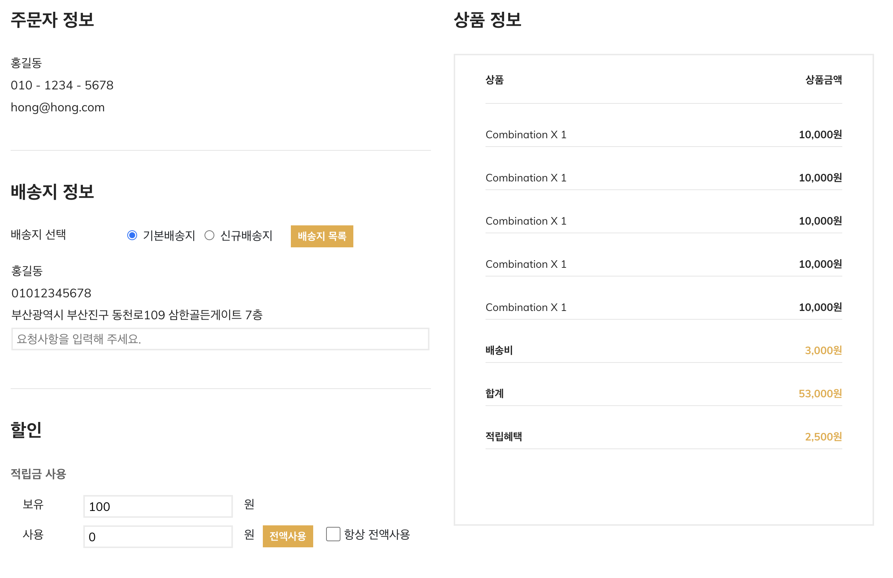
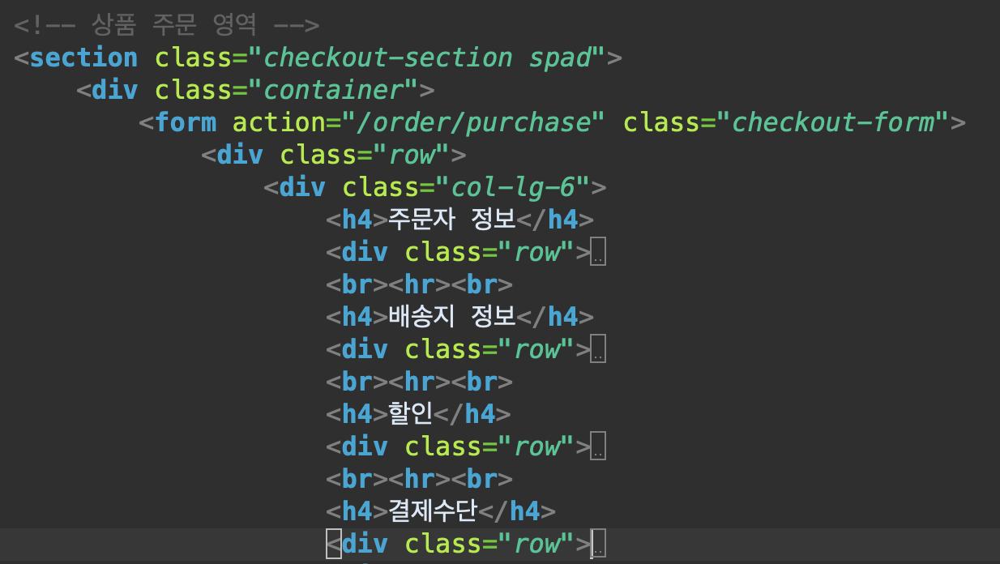
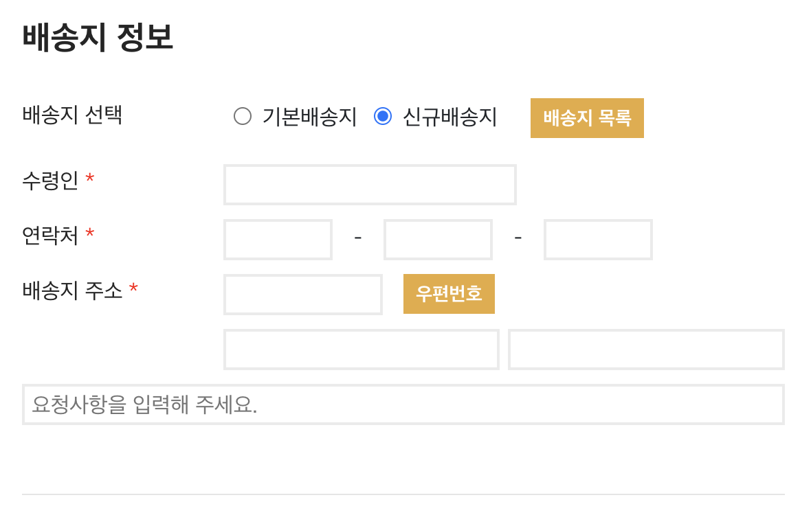
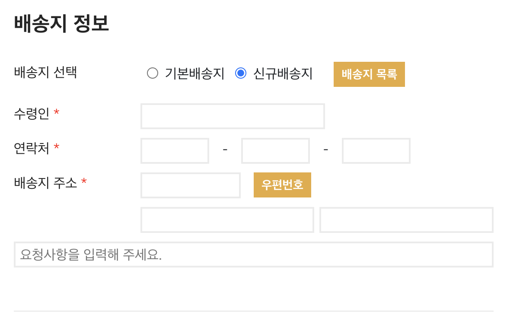
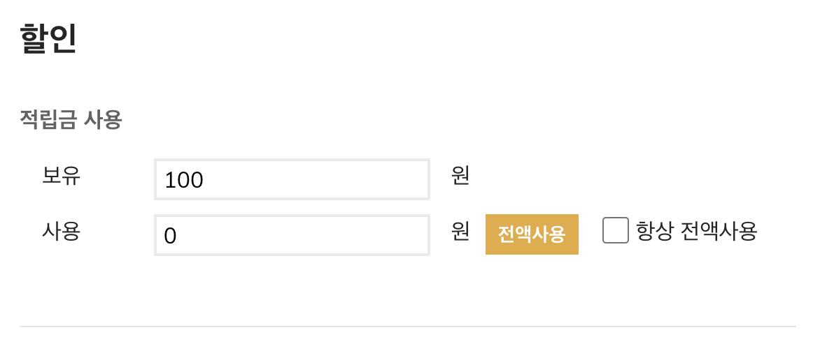
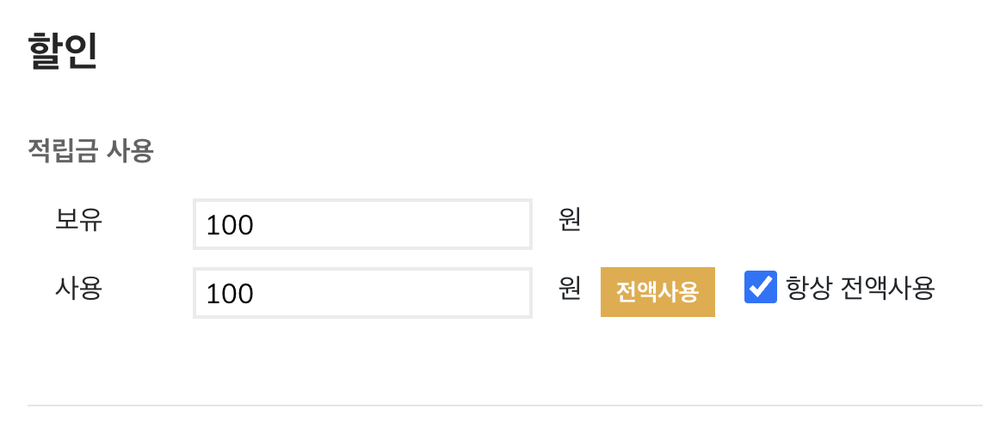
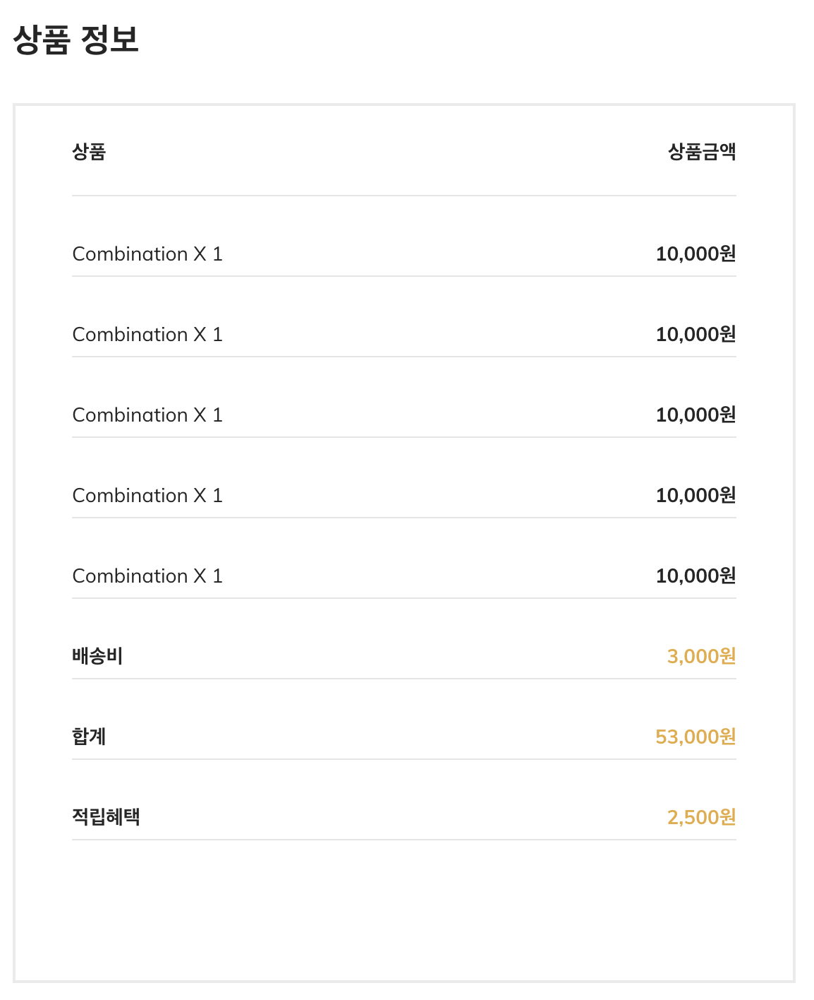

JAVA Spring) 1인가구를 위한 쇼핑몰 Uno más 개발일지 6 - 주문페이지와 주문완료페이지 제작
- 작성일 : 2022.04.28
- 작성자 : 황유진
- 팀원 : 김진영, 박승지, 반현빈, 오성은, 오은현, 윤정환, 황유진
- GitHub Repository : https://github.com/miro7923/Uno-Mas
개발환경
- MacBook Air (M1, 2020)
- OpenJDK 8
- Spring Tool Suite 4.14.0
- Spring framework 4.3.1.RELEASE
- Tomcat 8.5
- MySQL Workbench 8.0.19
기간
- 2022.4.13 ~ 2022.5.20
주제
- 웹 백엔드 수업 중 마지막 과제로 팀 프로젝트를 진행하게 되었다.
- 조건은
Spring기반으로 웹 사이트를 제작하는 것이다. - 총 팀원은 7명이며, 우리 팀은
1인 가구를 위한 쇼핑몰을 주제로 정했다. - 팀 이름으로 정해진
Uno más는 스페인어로하나 더라는 뜻이다.
진행상황 1 - 주문 페이지 frontend
order.jsp
- 쇼핑몰에서 사용자가 상품을 주문할 때 보여주는 페이지를 만들었다.
- 그동안 인터넷 쇼핑몰로 상품 주문은 참 많이 했지만 막상 만들려 하니 좀 막막해서 네이버 쇼핑의 주문 페이지를 참고해서 만들었다.
전체 레이아웃


- 베이스로 사용하는 템플릿의 레이아웃이 부트스트랩으로 잡혀 있기 때문에 나도 부트스트랩으로 레이아웃을 설계하고 디자인을 구현했다.
- 지금까지 부트스트랩을 써 본 적이 없어서 이번 프로젝트를 시작할 때에만 해도 부트스트랩에 대해 아는 것이 없었는데, 이번 프로젝트를 시작하고 여러 뷰 페이지들을 제작하면서 부트스트랩의 편리함을 깨닫고 점점 빠져들고 있다. 왜 그렇게 명성이 높은지 알겠다…! 맘처럼 되지 않는 css를 붙잡고 늘어지지 않아도, 부트스트랩의 클래스 선택자 하나면 손쉽게 화면 레이아웃을 구상할 수 있었다. 세세한 부분에서는 개별 css 조절이 필요하지만 전체적인 화면 구성의 틀을 잡을 때엔 부트스트랩이 정말 편리했다.
배송지 정보 입력받는 부분
 

JavaScript를 이용해 선택한 라디오 버튼에 따라 배송지 입력란을 다르게 출력하도록 했다.- 네이버 쇼핑 주문페이지의 배송지 정보 입력란을 참고해서 만들었다.
order.js
$(document).ready(function() {
$('#normalAddr').show();
$('#newAddr').hide();
...
// 기본배송지와 신규배송지 바꿔서 출력하는 메서드
toggleAddrBox();
...
});
function toggleAddrBox() {
$('input:radio[name=deliverSpot]').change(function() {
if ($(this).val() == 1) {
$('#normalAddr').show();
$('#newAddr').hide();
}
else {
$('#normalAddr').hide();
$('#newAddr').show();
}
});
}
- 배송지 선택 라디오 버튼 아래 부분을
div태그로 감싼 다음에id선택자를 지정해 그것으로 제어한다. - 배송지 입력란 외 다른 부분들도 같은 로직이 적용되는 부분이 많아서 이후 다른 라디오 버튼 선택란들도 모두 이와 같은 형태의 메서드를 작성해서 사용했다.
- 신규배송지 입력시 주소를 입력하는 부분은
다음 우편번호 API를 사용했다. 저번 프로젝트에 이어 두 번째로 사용해 보니까 저번보다 훨씬 쉽게 커스터마이징 해 적용할 수 있었다.
적립금 사용 부분


- 우리의 쇼핑몰 프로젝트에서는 적립금 제도를 운영할 것이기 때문에 적립금 사용란을 만들었다.
- 전액사용 버튼을 누르거나 항상 전액 사용에 체크하면 보유한 적립금 전액을 사용할 수 있다.
- 이것 또한
JavaScript로 제어한다.
order.js
function useAllPoints() {
var curPoint = $('#curPoint').val();
$('#usingPoint').attr('value', curPoint);
}
function toggleUseAllPoints() {
$('input:checkbox[name=useAllCheckBox]').change(function() {
if ($(this).is(':checked') == true) {
useAllPoints();
}
});
}
- 두 가지 메서드를 만들어서
전액사용버튼에는onclick이벤트시useAllPoints()가 호출되도록 했고 항상 전액 사용에 체크시에는jQuery로 변경을 감지해 이벤트 메서드가 호출되도록 했다.- 백엔드 작업시에는 회원 정보 테이블에 적립금을 전액 사용한다는 상태를 저장할 컬럼이 추가되어야 하고 관련 파라미터 또한 함께 보내야 할 것이다.
하단 페이지 버튼

- 결제 수단으로는 신용카드와 계좌이체 두 가지만 만들었다.

- 그런데 지금 생각해 보니 계좌이체가 아니라 무통장 입금으로 하는 것이 더 맞았던 것 같기도 하다. 우리 프로젝트가 상업적인 목적으로 진행하는 것은 아니기 때문에 시험용 결제 모듈 한 가지만 써 보게 될 것 같은데 그것으로는 신용카드 결제 모듈을 생각하고 있었기 때문이다. 이 버전을 이미 마스터 브랜치로 머지를 해 버려서 다음 백엔드 개발을 진행할 때 함께 수정 해야겠다.

- 현금 결제시에는 현금영수증을 신청할 수 있도록 만들었다. 이것의 출력 또한
JavaScript로 제어했다. - 메서드의 로직은 위에서 썼던 배송지 선택 부분과 동일하기 때문에 생략한다.
- 이 부분을 작업하며 회원정보 테이블에 현금영수증 신청정보 저장 컬럼도 추가되어야 함을 깨달았다.
주문 상품 목록 출력 부분

- 여기는 반복문으로 주문 페이지로 넘어온 상품 리스트의 개수만큼 출력하도록 했다. 지금은 단순 출력 테스트용으로 더미 데이터를 넣어 놓았지만 벡앤드 작업을 진행하게 되면 실제 상품명을 출력하고, 2개 이상 주문한 상품은 여러 번 출력되지 않고 수량이 하나 더 추가되는 방식으로 출력되게 할 것이다.
- 가격 텍스트를 정수형 그대로 출력하면 가독성이 떨어져서
JavaScript로 세 자리마다 콤마를 찍도록 했다.
order.js
// jQuery로 화면 로드시 호출
function convertCurrency(cnt) {
for (var i = 0; i < cnt; i++) {
var id = '#prodPrice' + i;
var price = $(id).text();
$(id).text(price.toString().replace(/\B(?=(\d{3})+(?!\d))/g, ","));
}
var deliveryFee = $('#deliveryFee').text();
$('#deliveryFee').text(deliveryFee.toString().replace(/\B(?=(\d{3})+(?!\d))/g, ","));
var totalPrice = $('#totalPrice').text();
$('#totalPrice').text(totalPrice.toString().replace(/\B(?=(\d{3})+(?!\d))/g, ","));
var point = $('#point').text();
$('#point').text(point.toString().replace(/\B(?=(\d{3})+(?!\d))/g, ","));
}
HTML페이지에서 가격 콤마를 찍는 방법과 관련해서 구글링하니까 많이 볼 수 있었던 정규식을 사용하는 코드로 구현했다. 주문할 상품의 목록 길이를 매개변수로 받아서 상품들의 가격에 콤마를 찍도록 했다.
<ul class="order-table">
<li>상품 <span>상품금액</span></li>
<!-- @@ 장바구니 목록 배열 사이즈만큼 출력하기 @@ -->
<!-- @@ 장바구니 목록 로드시 model에 배열 길이 정보 저장해서 자바스크립트에서 읽어오기 @@ -->
<%for (int i = 0; i < 5; i++) { %>
<li class="fw-normal">Combination x 1 <span id="prodPrice<%=i %>"><%=prodPrice %>원</span></li>
<% total += prodPrice; } %>
<li class="total-price">배송비 <span id="deliveryFee"><%=deliveryFee %>원</span></li>
<li class="total-price">합계 <span id="totalPrice"><%=total + deliveryFee %>원</span></li>
<li class="total-price">적립혜택 <span id="point"><%=(int)(total * 0.05) %>원</span></li>
</ul>
JSP페이지에서 상품 목록의id지정은 이렇게 해 주었다. 내가 생각했을 때 최선인 방법은 이것인 거 같아서 이렇게 짰는데 더 효율적인 방법이 있을까? 로직을 짜는 내내 더 고민해 볼 필요가 있다는 생각을 했다.
진행상황 2 - 결제 완료 페이지

- 결제 완료 페이지는 최대한 심플하게 구성하고자 했다. 화면을 구성하면서 참고자료 구글링을 해 보니 대체로 간단하게 구성하는 추세였기 때문이다.

- 페이지 하단에는 배송지 정보와 주문/결제 정보를 표시하도록 했다. 그리고 홈으로 가는 버튼과 마이페이지로 가는 버튼을 만들어 두었다.
참고
- 라디오 버튼 눌렀을 때 변경 감지해서 다르게 출력
- css class 선택자 적용 순서
- 이번 페이지들을 제작하며
class선택자의 중첩 사용과css의 적용 순서에 대해 잘 알게 되었다.
- 이번 페이지들을 제작하며
- [tip] 가격(숫자 3자리, 천단위)에 자동 콤마 (input or div) 넣기
마감까지
D-22